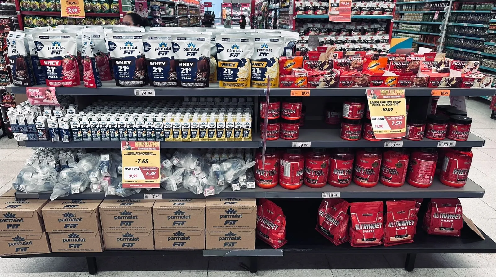
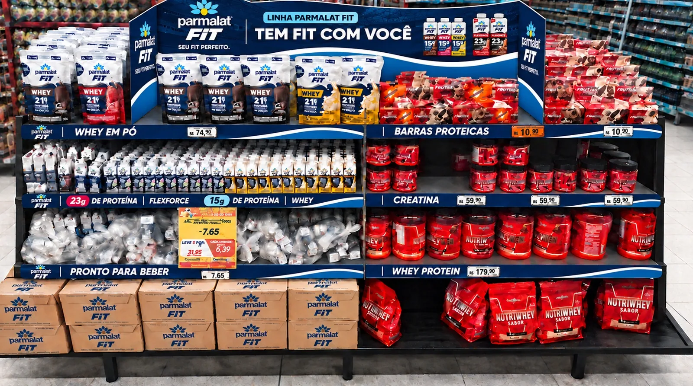
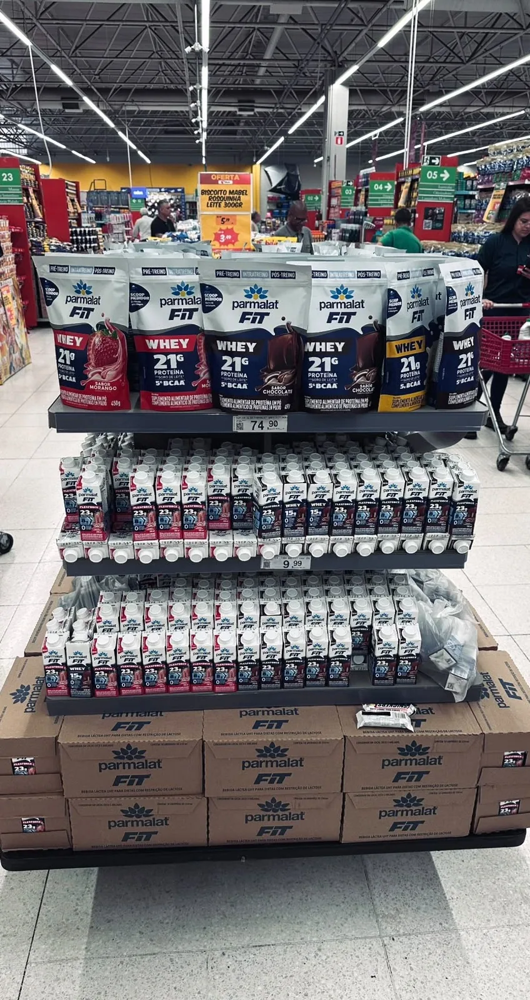
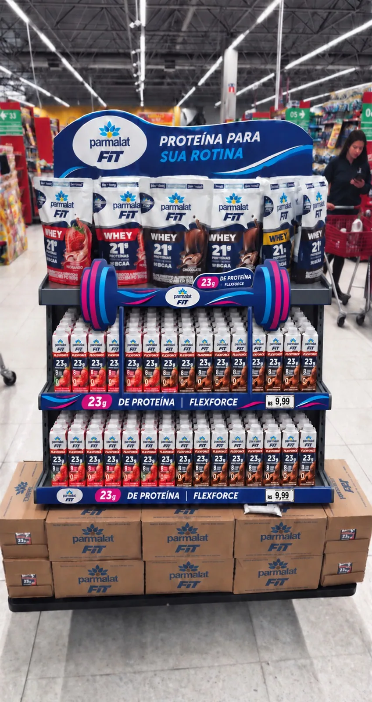
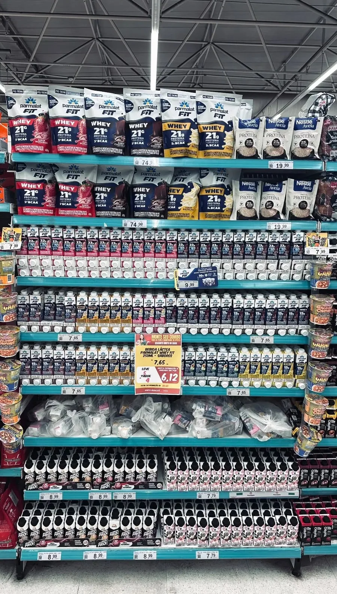
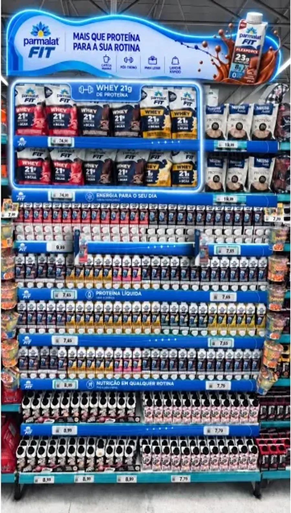
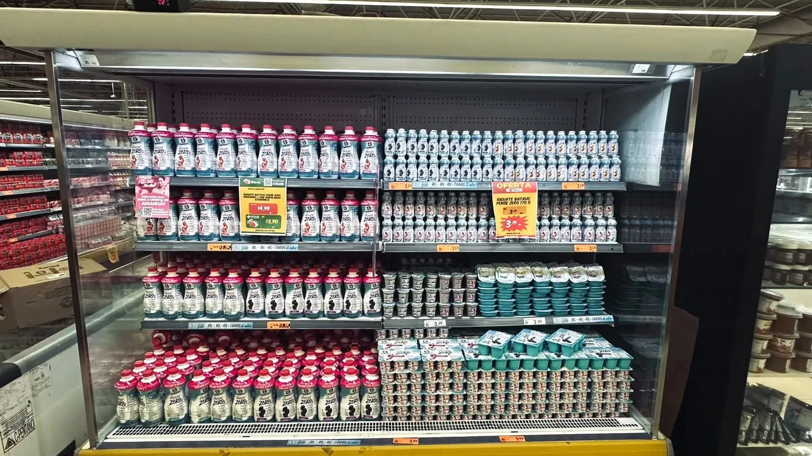
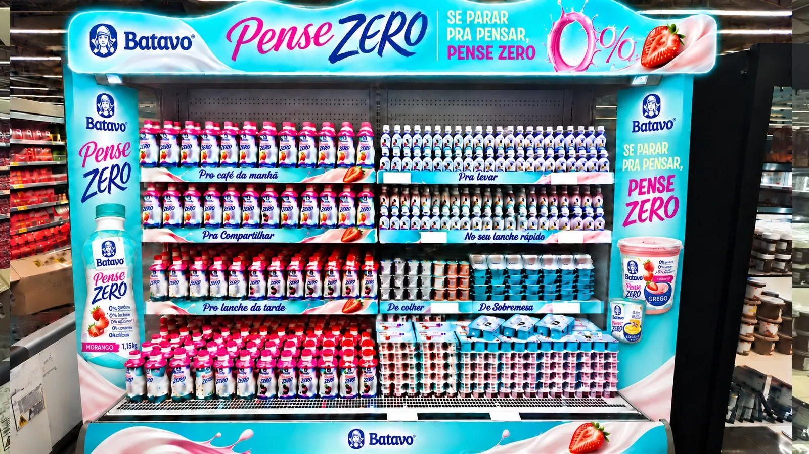

Projeto visual · v2 · Novembro de 2026
Lactalis no D'avó Oratório
Cinco espaços em 3D e do antes ao depois, com as peças finais de cada marca.
Fale comVanessa MorelliDiretora Comercial · 75LAB
O projeto
Cinco espaços Lactalis na loja, com o Président como estrela.
Mais marca, mais luz e mais facilidade para o cliente escolher. Esta é a etapa do visual: os valores vêm depois da aprovação.
- 5espaços
- 3marcas
- 4com luz de LED
A loja hoje
Como ler: cada espaço numa tela, com o 1antes e depois, as 2peças e 3como aplicar.
01Parmalat Fit
Ilha de nutrição esportiva
A testeira em 3D · gire e veja frente, verso e costa com costa
- Duas testeiras iguaisAbas dobradas viram divisórias; de costas, comunicam os dois lados
- Faixa do pesoEncaixa na canaleta da ponta, sem ferramenta
- Réguas 41 x 3,8 cmUm tamanho só: 3 no lado longo, 2 na ponta
01Parmalat Fit
Ilha de nutrição esportiva
Lado longo


AntesDepoisPonta


AntesDepoisComo aplica
Testeiras em pé, costa com costa
Peça 1Faixa do peso encaixada na canaleta
Peça 2Réguas no trilho de preço
Peça 3A base continua para os produtos
Sem comunicaçãoAs peças
Tem Fit com você: duas testeiras com abas que viram divisórias, a faixa do peso na ponta e réguas que nomeiam cada prateleira.
KV referência
enviado pelo cliente
02Parmalat Fit
Gôndola seca
- Laterais recortadasAvançam no corredor, com neonflex nas curvas
- Produto giratórioEncaixa no recorte da lateral e gira no eixo
- Testeira e base inclinadasFecham o módulo entre as laterais
02Parmalat Fit
Gôndola seca


AntesDepoisAs peças
Um módulo inteiro da marca: laterais recortadas com LED, produto que gira, testeira e base inclinadas, moldura do Whey e adesivo de chão.
Como aplica
Laterais com LED avançando no corredor
Peças 1 e 4Testeira e base entre as laterais
Peças 2 e 5Moldura na altura dos olhos
Peça 3Adesivo de chão na frente
Peça 603Batavo Pense Zero
Ponta refrigerada
- Testeira com LEDIlumina o topo da ponta
- Faixas por ocasiãoCafé, lanche, compartilhar, sobremesa
- Laterais e rodapéFecham a ponta com a marca
03Batavo Pense Zero
Ponta refrigerada
KV referência
enviado pelo cliente


AntesDepoisAs peças
Testeira com LED, laterais, réguas por ocasião e rodapé, na linguagem Se parar pra pensar, pense zero.
Como aplica
Testeira com luz
Peça 1Adesivo nas duas laterais
Peça 2Réguas no trilho de preço
Peça 3Rodapé por cima do amarelo
Peça 404Président
Ponta refrigerada de queijos
- Logo em aplique iluminadoRelevo com luz atrás, sobre a faixa da loja
- Lateral externaChapa por fora da lateral da ponta
- Bandeja do StickMoldura do Bob Esponja para o lançamento
04Président
Ponta refrigerada de queijos
KV referência
enviado pelo cliente
As peças
O sabor que é referência no mundo: testeira com o logo em aplique iluminado, laterais, stopper na divisa, bandeja do Stick e base.
Como aplica
Testeira com o logo iluminado
Peça 1Laterais externa e interna
Peças 2 e 3Stopper na divisa e bandeja do Stick
Peças 4 e 5Réguas no trilho e base
Peças 6 e 705Sobremesas Batavo
Ponto de sobremesas
- Testeira 133 x 40 cmCom LED, no clima Pudim Lovers
- Frame e lateraisVestem a geladeira por fora
- Réguas com o nomeBrigadeirão, pudim, Creamy e Flan
05Sobremesas Batavo
Ponto de sobremesas
KV referência
enviado pelo cliente
As peças
Hora da sobremesa no clima Pudim Lovers: testeira com LED, frame, lateral, réguas com o nome e rodapé.
Como aplica
Testeira com LED
Peça 1Frame e lateral por fora
Peças 2 e 3Régua com o nome de cada sobremesa
Peça 4Rodapé na faixa frontal
Peça 5Próximos passos
Aprovado o visual, seguimos para os valores.
- 01Aprovação do projeto visualAjustes nesta etapa não geram retrabalho de orçamento.
- 02Medição na lojaFecha as medidas de cada peça, com atenção ao espaço exato do Président.
- 03ValoresOrçamento sobre o projeto aprovado.
A confirmar com a loja
- Ponto de energia para a luz na gôndola seca, no Pense Zero, no Président e nas Sobremesas.
- Autorização do D'avó para a testeira do Président, as faixas da ilha e a base do Pense Zero.
- Se o expositor de embutidos sai da frente do painel do Président.
Vanessa Morelli
Diretora Comercial · 75LAB
Para tirar dúvidas, ajustar o projeto e agendar a medição na loja.
- E-mailvanessa.morelli@75lab.com.br
- Telefone(11) 98398-2803
- Site75lab.com.br
- Instagram@setecincolab